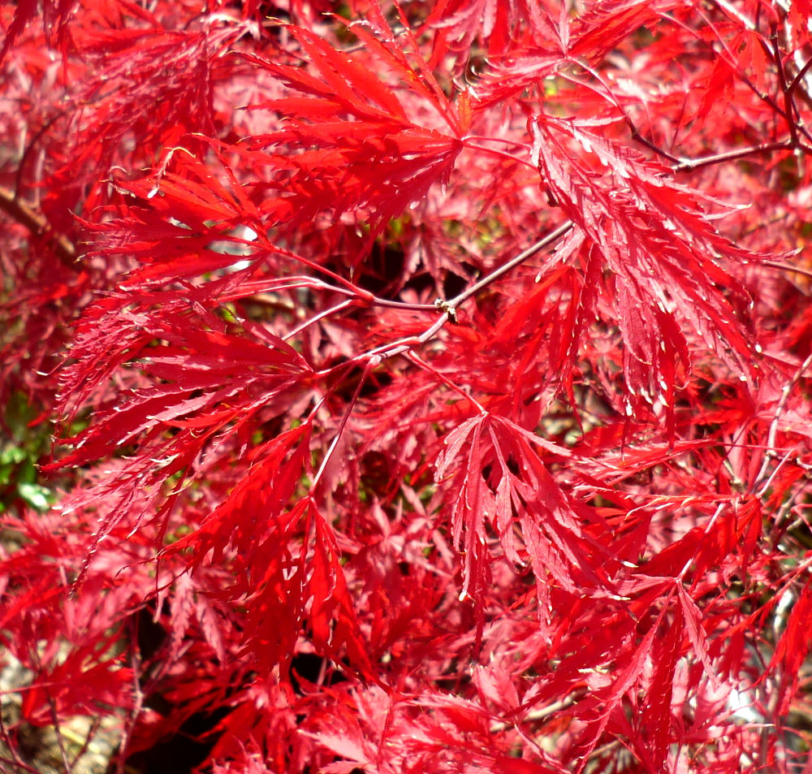
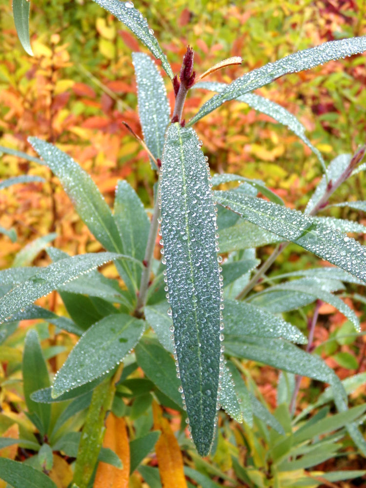
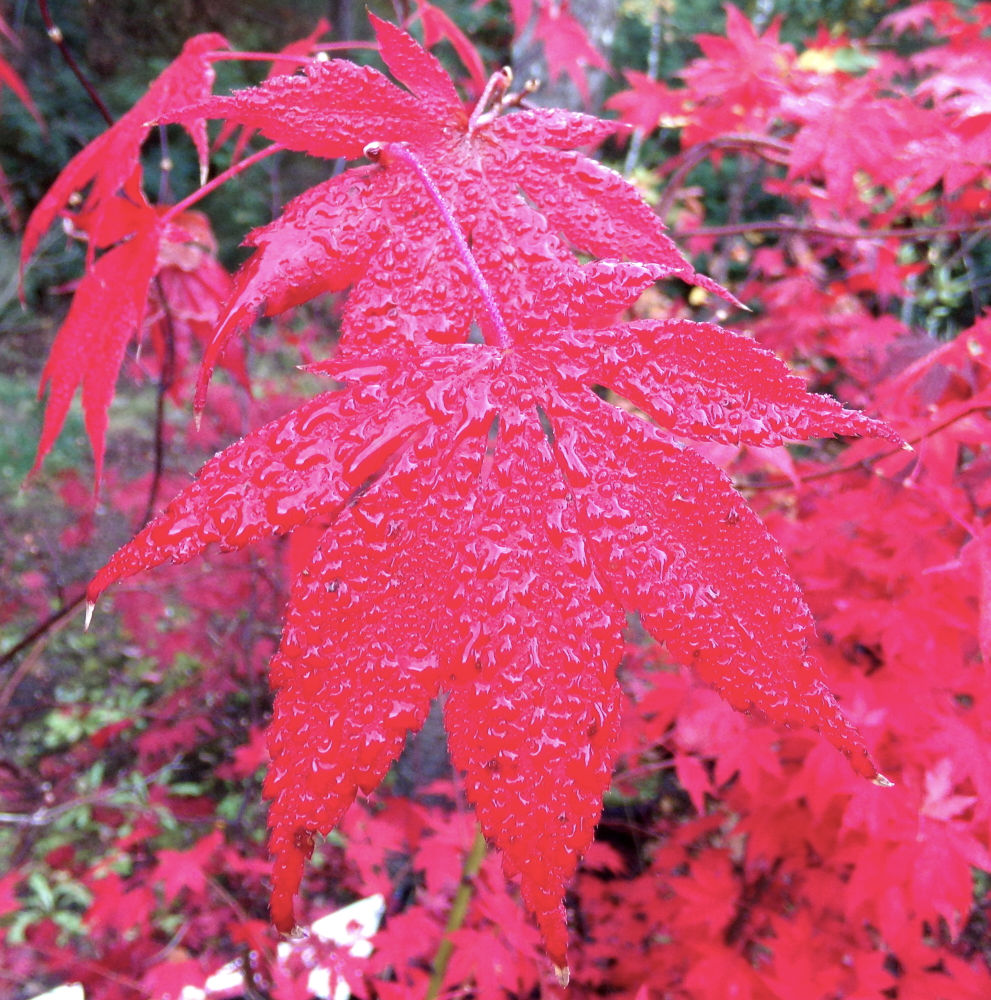
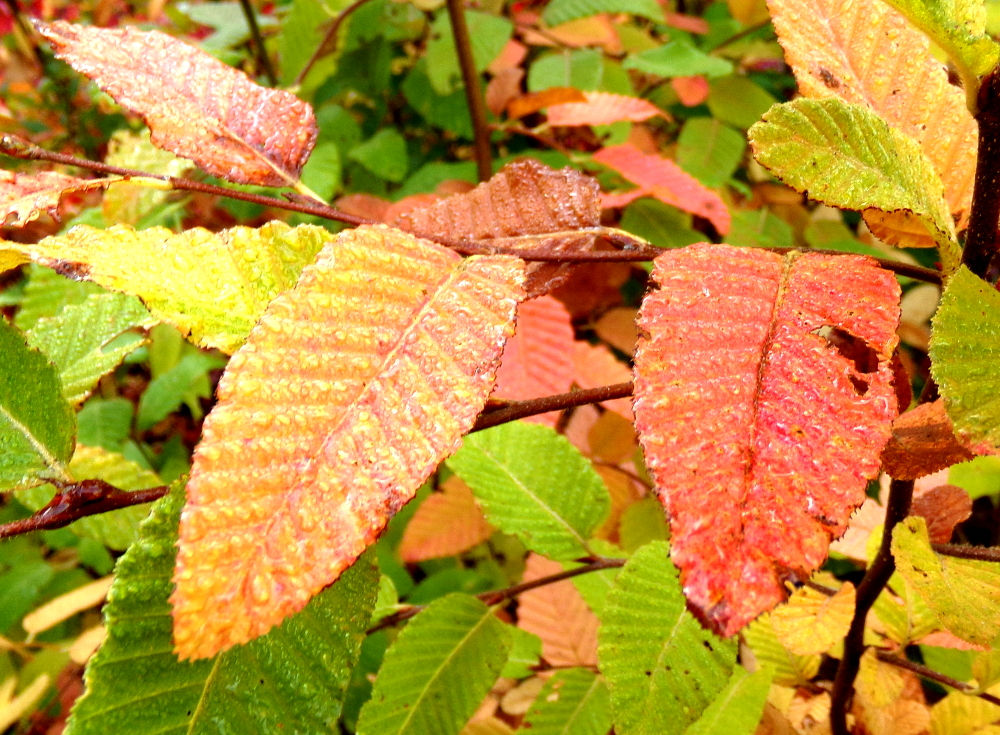

El objetivo de esta ciber-guía es acercar datos de las distintas especies de árboles que se pueden encontrar a lo largo del corredor de los Lagos, así como también algunos lugares donde las podemos encontrar.
Cualquiera podría preguntarse ¿Porque se describen solamente las especies arbóreas?, la respuesta más honesta es que sería una tarea que escapa a nuestra capacidad describir todas las especies vegetales, además se corre el peligro de terminar realizando algo demasiado extenso, que quite las ganas y esa es una de las cosas que no queremos hacer. Sí, queremos hacer algo, despertar la curiosidad empezando por los árboles. Queremos que sea algo que puede llevarse en cualquier momento y que ayude a saldar dudas, que se use, tanto en el celular y en la computadora, sabiendo que no llegamos a todos, pero si a una parte, el hecho de poder verlo en la computadora fue pensado en las personas que no pueden acceder a los distintos lugares ya sea por cuestiones varias, desde la lejanía o algún tipo de impedimento físico.
No hay manera de poder valorar los árboles si no se conocen, no se puede apropiar el espacio público si no se lo conoce y tampoco se lo puede valorar; la oportunidad de conocer es también la oportunidad de poder disfrutarlo de manera más integral.


Importancia del arbolado urbano y los espacios verdes
Más allá de las funciones que tiene los vegetales, desde las algas unicelulares hasta los árboles casi gigantescos, que entre otras cosas son los responsables de una atmósfera que nos permite vivir; podemos agrupar en dos grandes tipos los beneficios del arbolado urbano, los físicos y los sociales.
Respecto de los beneficios físicos son todos aquellos que aumentan la calidad de vida por la mejoría en las variables ambientales.
Para empezar uno de los primeros beneficios del arbolado urbano es que atempera las condiciones climáticas, reduciendo la temperatura en el verano debido a la sombra que producen y aumentando la humedad relativa, principalmente porque se reduce el efecto producido por las construcciones de los centros urbanos que crean grandes superficies que emiten gran cantidad de calor (edificios, calles pavimentadas, veredas, etc.). Al mismo tiempo de brindar reparo en verano y aislamiento en el invierno, el arbolado urbano reduce los costos de energía en refrigeración y calefacción respectivamente.
Mejora la calidad del aire capturando partículas de polvo en suspensión principalmente en la superficie de sus hojas. Absorbe contaminantes gaseosos libres en el aire por medio de los estomas de sus hojas. Respecto de esto último no es menor el papel de los árboles urbanos en la captura de Dióxido de carbono (CO²) uno de los principales gases causantes del efecto invernadero.
Tiene un importante papel en la regulación hídrica local, esto es por varios motivos principalmente porque reduce los efectos de la escorrentía, ya que amortigua la caída de la lluvia, mitigando daños por inundaciones, además de frenar procesos erosivos al retener el suelo
Reducen los niveles de ruido, principalmente el follaje y las ramas de las copas de los árboles producen una disminución considerable de la contaminación acústica, provocada generalmente por el tráfico.
Refugio de fauna silvestre, tanto los árboles como los parques son espacios donde principalmente los pájaros encuentran albergue, esto hace a su vez que aumente la biodiversidad y se enriquezca de alguna manera el entorno urbano.


Dentro de los beneficios sociales, a pesar de ser más difíciles de cuantificar; por ejemplo existen niveles de violencia más bajos en centros urbanos con suficientes parques públicos, probablemente por ser lugares donde la población crea otro tipo de vínculos, son espacios comunes e igualadores, articuladores de relaciones que refuerzan el entramado social. De ahí la importancia de los parques públicos, al ser de todos y por eso históricamente el papel social de las plazas como escenario de la vida social, principalmente en los centros urbanos.
Disminución de estrés de la población, ya sea el entorno conformado por el arbolado urbanos, los parques y o los bosques comunales, sus cambios de tonalidades a lo largo del año, la ruptura de la monotonía dada por las edificaciones, etc. reducen la presión en la personas y mejoran sus estados de ánimo.
Juntando tanto las variables ambientales como las sociales (de por si indivisibles) vemos que en estos tiempos de cambio climático, concentración en los centros urbanos y maneras de relacionarse hace que los espacios verdes públicos algo de suma importancia y los árboles son protagonistas.